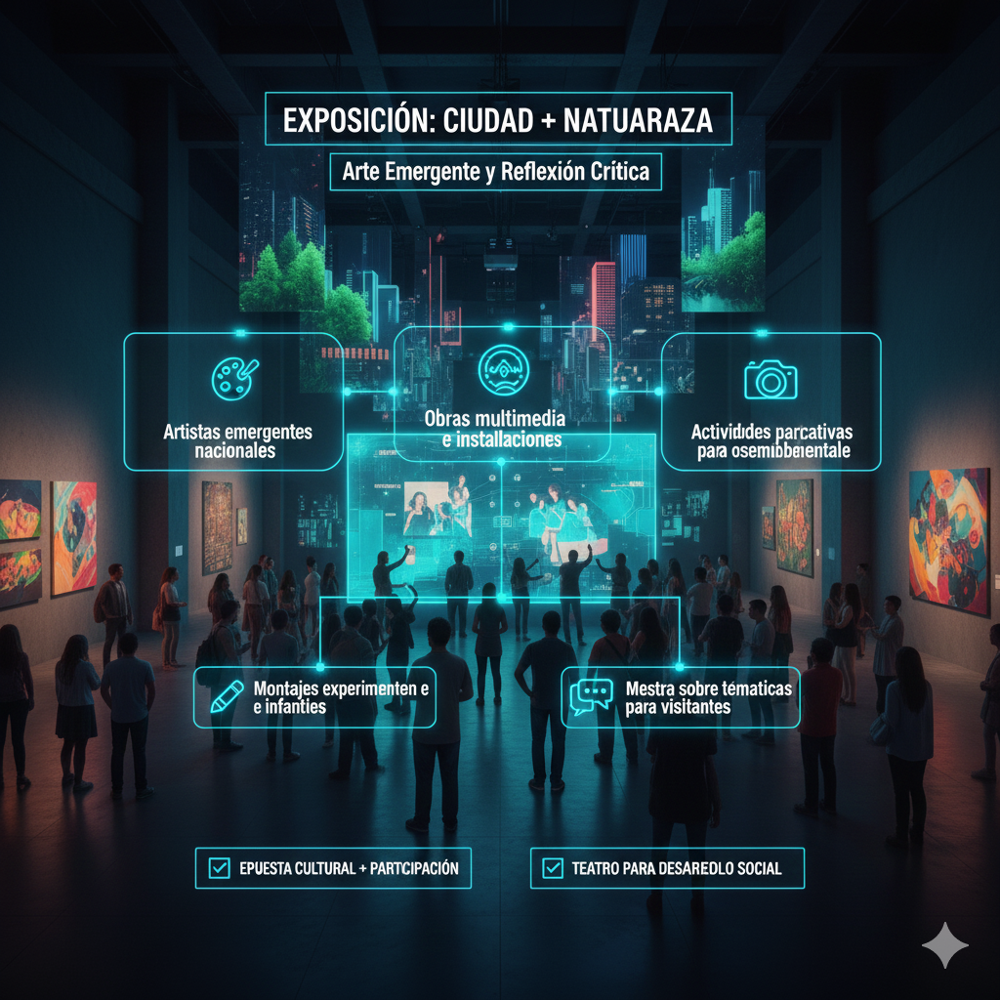
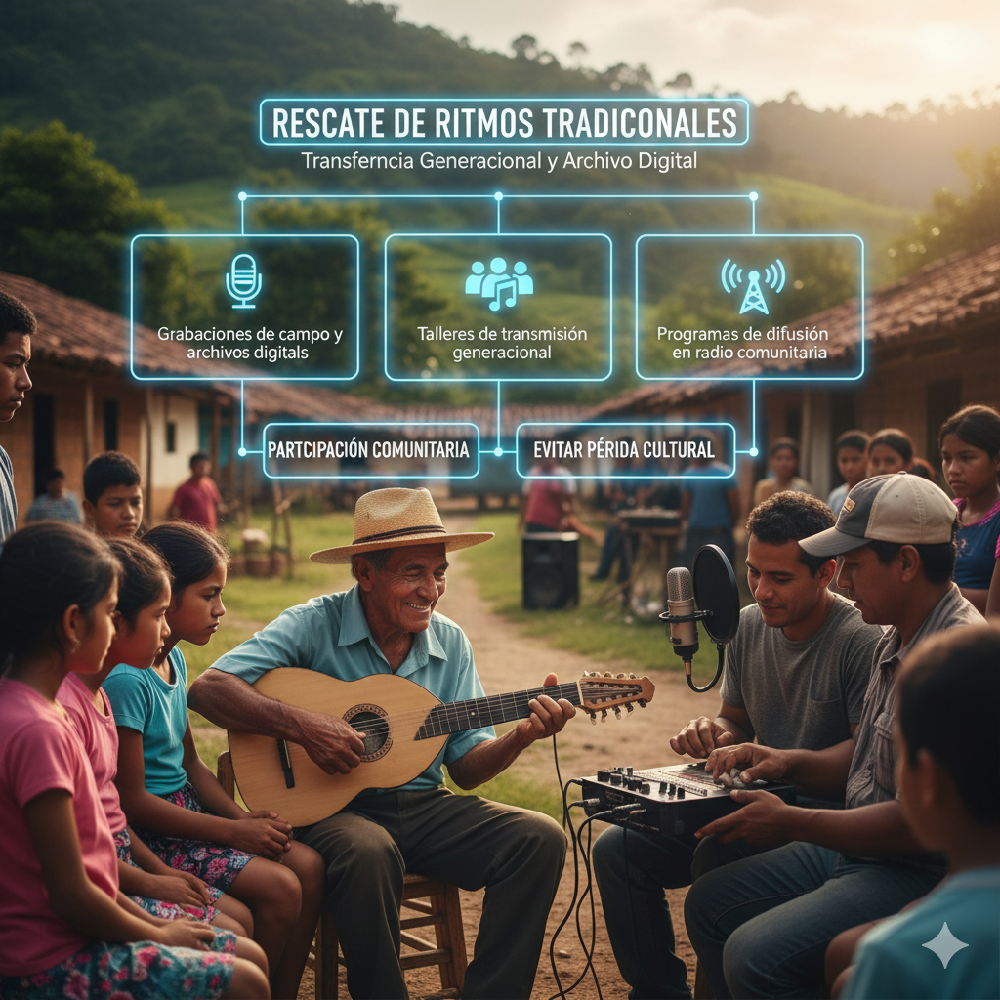
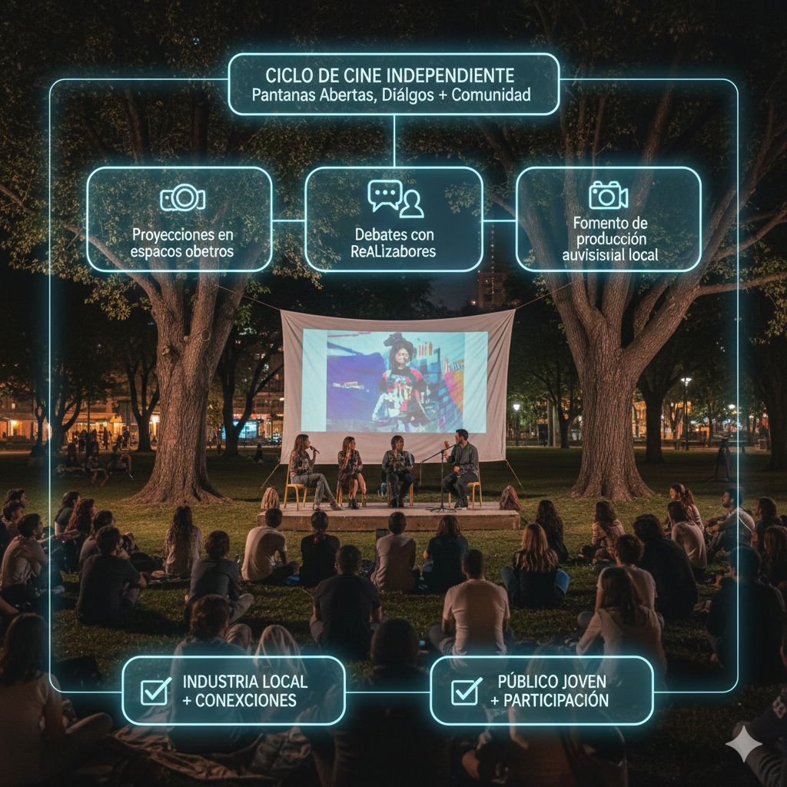

El festival anual de teatro contó con la participación de compañías locales y nacionales que presentaron
una
programación diversa: desde montajes experimentales hasta versiones adaptadas para público infantil.
La dirección artística destacó la apuesta por nuevos dramaturgos y la formación de públicos a través de
talleres y charlas con los creadores.
Programación para todas las edades.
Talleres y conversatorios con artistas.
Funciones en espacios alternativos.
Asistentes y críticos valoraron el nivel de las presentaciones y sugirieron que el festival amplíe su
duración en ediciones futuras para albergar más propuestas comunitarias.
Inauguran exposición de arte contemporáneo

Autor: Jorge Paredes
La exposición reúne a una veintena de artistas emergentes que exploran temáticas urbanas y
medioambientales mediante instalaciones, pintura y obras multimedia. La muestra propone una reflexión
crítica sobre la relación entre ciudad y naturaleza.
Los organizadores señalaron que se han incorporado espacios interactivos para que el público participe en
la creación de piezas colectivas durante el periodo de exhibición.
Obras multimedia e instalaciones.
Artistas emergentes nacionales.
Actividades participativas para visitantes.
Proyecto de preservación musical recibe apoyo

Por: Fundación Patrimonio
Un proyecto financiado por organismos internacionales busca documentar y difundir ritmos tradicionales de
comunidades rurales. El programa contempla grabaciones, talleres con músicos locales y la creación de
archivos digitales accesibles al público.
Los coordinadores destacaron la importancia de la participación comunitaria y la transferencia de
conocimientos a nuevas generaciones para evitar la pérdida de saberes musicales.
Grabaciones de campo y archivos digitales.
Talleres de transmisión generacional.
Programas de difusión en radio comunitaria.
Ciclo de cine independiente atrae público joven

Autor: Natalia Pérez
El ciclo presentó una selección de películas independientes tanto nacionales como internacionales,
acompañadas de debates y sesiones de preguntas con directores y productores. Las proyecciones en
espacios públicos favorecieron la afluencia de público joven.
Organizadores y espectadores coincidieron en que este tipo de eventos fortalece la industria local y crea
conexiones entre creadores y audiencias.